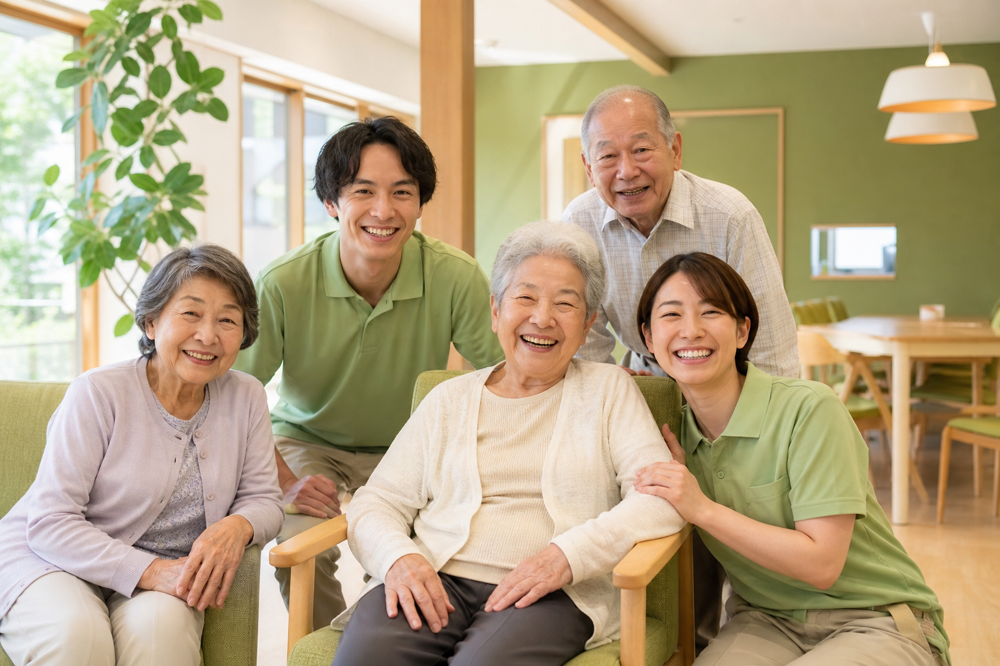
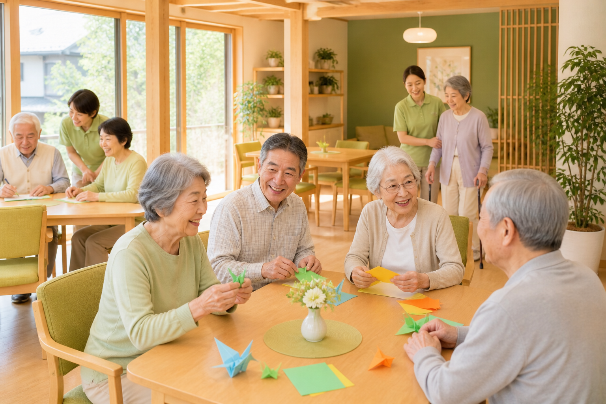

宍粟市の介護・デイサービス
地域の人が、
気軽に立ち寄れる場所を。
デイサービス・訪問介護・居宅介護支援・相談支援
兵庫県宍粟市を中心に、地域に根ざした福祉を提供しています。
法人理念
地域の人々だれもが
立ち寄れる居場所づくり
年齢や障がいの有無にかかわらず、誰もが自分らしく暮らし続けられる地域をつくりたい。 さつきは、介護・福祉サービスを通じて、ご利用者様一人ひとりの「当たり前の日常」を 丁寧に支えています。宍粟市の地域に根ざして20年以上。 「また来たい」と思っていただける温かな居場所であり続けます。
サービス紹介
さつきのサービス

デイサービス
日中のお預かりから、レクリエーション・入浴・食事まで。「ぷらっとホームさつき」「デイサービスあすなろ」の2拠点で、ご利用者様の活き活きとした毎日を支えます。
ぷらっとホームさつき：山崎町鹿沢182-2
デイサービスあすなろ：山崎町川戸743
訪問介護
住み慣れたご自宅で、安心して暮らし続けるために。身体介護・生活援助・通院の付き添いなど、ヘルパーがご自宅に伺い、日常のお困りごとをお手伝いします。
訪問介護事業所あすなろ：山崎町高下304-5
居宅介護支援（ケアプラン）
「どのサービスが合っているか分からない」そんなときは、まずご相談ください。ケアマネジャーがお話を丁寧に伺い、ご本人・ご家族に合ったケアプランを作成します。
居宅介護支援事業所あすなろぷらっと：山崎町高下304-5
相談支援
障がいのある方やそのご家族の「これからの生活」について、専門の相談員がご相談をお受けします。サービスの利用計画から日常の悩みまで、気軽にお声がけください。
相談支援事業所ぷらっと：山崎町高下1217
介護福祉士研修
介護の仕事をはじめたい方、キャリアアップを目指す方へ。初任者研修・実務者研修を定期的に開講しています。地域の介護人材育成にも積極的に取り組んでいます。
初任者研修 / 実務者研修（定期開講）
さつきについて
地域とともに、歩み続けて
20年以上の実績
宍粟市で長年にわたり地域の方々の生活を支えてきた信頼と経験。積み重ねてきた実績が、安心のサービスの根拠です。
5つの事業所が連携
デイサービス・訪問介護・居宅支援・相談支援が一法人内にあるため、ご状況の変化にも柔軟にサービスを組み合わせて対応できます。
地域づくりへの取り組み
介護サービスの提供にとどまらず、誰もが気軽に立ち寄れる居場所づくりを通じて、宍粟市全体の福祉の向上を目指しています。
アクセス
法人本部・各事業所
| 法人名 | 特定非営利活動法人 さつき |
|---|---|
| 法人本部 | 〒671-2524 兵庫県宍粟市山崎町高下304-5 |
| 電話 | 0790-65-9020 |
各事業所
- ぷらっとホームさつき
山崎町鹿沢182-2 / 0790-63-2208 - デイサービスあすなろ
山崎町川戸743 / 0790-62-1999 - 居宅介護支援事業所あすなろぷらっと
山崎町高下304-5 / 0790-62-1015 - 訪問介護事業所あすなろ
山崎町高下304-5 / 0790-65-9020 - 相談支援事業所ぷらっと
山崎町高下1217 / 0790-63-3322